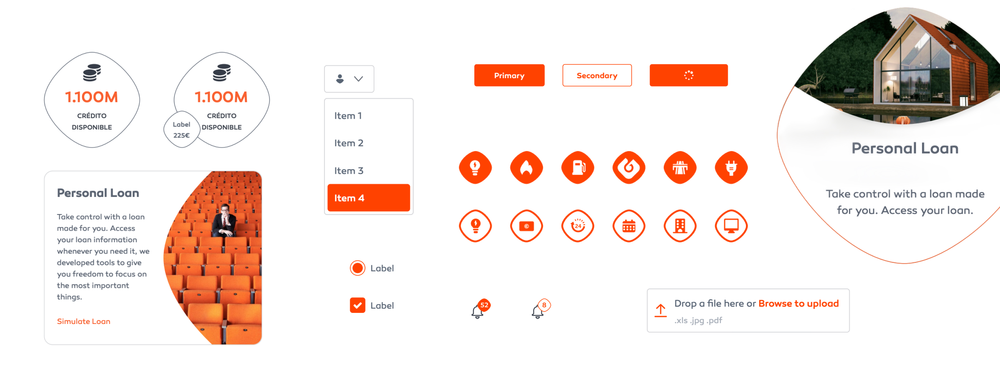

Iconography & Styleguide
Four distinct icon styles from a single grid — plus a full component library — unifying a fragmented visual language across an energy company's entire digital ecosystem.

Unifying a fragmented
visual language
Galp's digital products — web apps and mobile apps — were using inconsistent icon and component styles. Different products had sourced icons from different libraries, resulting in a disjointed visual experience that undermined brand cohesion.
The challenge was analysing all components in use across the ecosystem and unifying them into one consistent system that could serve every product and platform.
I created a unified iconography system with four distinct styles and a UI component library — buttons, badges, switches, sliders, tabs, and cards — all documented in a comprehensive style guide.
The result brought visual consistency across web and mobile products, eliminated duplicate components, and provided a scalable foundation for future growth.
Four styles,
one system
Galp Form Fill
Bold, filled icons with the Galp form language — for primary contexts and marketing surfaces.
Galp Form Outline
Outlined counterparts following the same construction, for lighter, dense UI contexts.
Simple Fill
Stripped-back filled icons for compact interfaces where clarity matters most.
Simple Outline
Minimal outline set for the densest UI — toolbars, tables, and system controls.
Grid &
rules
All icons are constructed on a 24×24px grid with a 2px safe zone. Key shapes are optically corrected to appear visually consistent rather than mathematically identical.
Stroke width is fixed at 1.5px for outline icons. Corner radii follow a consistent rule — 1px inner, 2px outer — creating subtle, uniform roundness across the set.
Each icon follows strict alignment rules: centred within the grid, optically balanced, and tested at both 16px and 24px to ensure readability at all target sizes.
Naming as a feature. A strict, function-based naming convention made icons discoverable and safe to extend — good names treated as part of the design, not an afterthought.